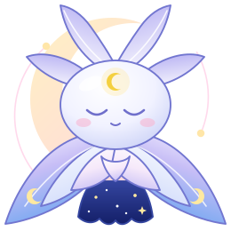

The wind here is synthesized, a stand-in for the feel. Real recordings (snowy wind, a faint ice creak) come later as a mix called "Snowy night". Rain, fireplace, keyboard, café chatter and piano stay in the app's mixer.